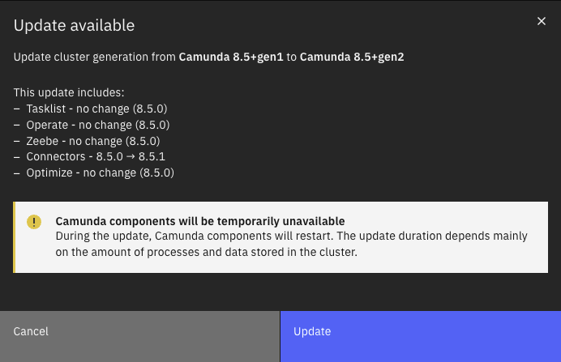

Announcements
Camunda 8.5
Release date: 9th of April 2024
End of maintenance: 14th of October 2025
Camunda 8 SaaS - Required cluster update
By August 30th, 2024 all automation clusters in Camunda 8 SaaS must be updated to the following versions at a minimum:
- 8.2+gen27
- 8.3+gen11
- 8.4+gen7
- 8.5+gen2
auth0 announced an End-Of-Life for one of the functionalities that is being utilized by previous automation clusters. The new versions are not using this functionality anymore. This update ensures your cluster will work seamlessly after auth0 deactivates the feature in production.
You minimally need to take the following update path:
- 8.0.x -> 8.2+gen27
- 8.1.x -> 8.2+gen27
- 8.2.x -> 8.2+gen27
- 8.3.x -> 8.3+gen11
- 8.4.x -> 8.4+gen7
- 8.5.x -> 8.5+gen2
If you do not update the cluster by August 30th 2024, we will update the cluster for you. Without an update, you would lose access to your cluster.
Camunda 8 Self-Managed clusters are not affected by this.
Updated SaaS URLs
We will simplify the URL for Camunda 8 SaaS from cloud.camunda.io (console.cloud.camunda.io) to camunda.io (console.camunda.io).
On or around July 9th, users will be directed to the new URLs. Both URLs will continue to be active for at least 18 months so navigation from supported versions of components like Operate is still possible.
Internal allowlisting or active rules for cloud.camunda.io must be transitioned to the new camunda.io URL. This change primarily affects Console and Modeler. During sign up, users will be briefly redirected through accounts.cloud.camunda.io, which will also be updated.
Syntax changes in Helm chart
A Camunda Helm chart upgrade is not possible from v9.x.x to v10.0.0 or v10.0.1. Instead, upgrade directly to v10.0.2+.
The Camunda Helm chart v10.0.0 has major changes in the values file structure. Some keys in the values file have been changed. For compatibility, the keys are deprecated in the Camunda release cycle 8.5 and will be removed in the Camunda 8.6 release (October 2024).
Follow the upgrade instructions to upgrade from Camunda Helm chart v9.x.x to Camunda Helm chart v10.x.x.
Support for Amazon OpenSearch
With the 8.5 release, Optimize is now also compatible with Amazon OpenSearch 2.5+. Note that using Amazon OpenSearch requires setting up a new Camunda installation. A migration from previous versions or Elasticsearch environments is not supported.
Known limitations
This release contains the following limitations:
- In Optimize
8.5.0- Limitation
- Description: OpenSearch support in Optimize is limited to data import and the raw data report.
- Reference: n/a
- Mitigation: Optimize can be installed and used in production with limited reporting functionality. Optimize imports all process data generated by Zeebe. All reporting functionality as described in the docs will be delivered with upcoming patches.
- Limitation
- In Console
8.5.x- Limitation
- Description: Custom OIDC provider support for Console is not supported
- Reference: https://github.com/camunda/issues/issues/784
- Limitation
Changes in supported environments
- Raised minimum Go version to 1.21 for the Zeebe Go client
Camunda SaaS: New generation naming scheme
With the April release, the generation naming scheme in Camunda 8 changed and no longer includes the patch version.
The new naming scheme used for all Camunda SaaS generations created after April 2024 is Camunda <Major>.<Minor>+gen<N>, where N is incremented with every atomic change to the component version set. Existing generations will not be renamed.
For patch releases to existing generations, N is set to the latest patch level plus 1. For example, when Camunda 8.4.5 is the current generation name, the following patch will be released as Camunda 8.4+gen6.
This was done to decouple the generation name from the particular patch level of the components it contains, as some component versions like Connectors are decoupled from other components.
You will learn about the particular component patch version changes in the update dialogue to the latest generation available. The following screenshot shows a sample update from Camunda 8.5+gen1 to Camunda 8.5+gen2, where only the Connectors patch version changed.

Note that the actual values shown in this screenshot don't correspond to any actual generations and only serve as an example.
Removal of Web Modeler's beta API
As of the 8.5 release, the Web Modeler's beta API has been removed. The API was deprecated in 8.3 and is no longer available in 8.5. Use the Web Modeler v1 API instead. For a migration guide, see the Web Modeler API documentation.
Zeebe 8.5.0 breaks serialization of timestamp values in management API (Self-Managed only)
Zeebe 8.5.0 was released with a new bug that breaks serialization of timestamp values in management APIs, such as backup and cluster scaling.
Timestamps which were previously serialized as ISO8061 strings are now serialized as integer values.
Until a fix is delivered in 8.5.1, workarounds include not deserializing timestamp values from affected APIs, or deserializing them as integers.
Identity Keycloak URL changes
Identity now uses the Keycloak frontend URL instead of the backend URL. This change may affect you if you have blocked the Keycloak frontend URL from other services (including Camunda applications), and can potentially impact Identity's functionality.
To avoid connectivity issues, ensure your Keycloak frontend URL is accessible by adjusting your network, firewall, or security settings as needed. This adjustment is crucial to maintain the integration with Keycloak and ensure compatibility.
Deprecation of Self-Managed AWS Marketplace offering
As of October 2025, the Self-Managed AWS Marketplace offering will be deprecated and no longer publicly available.
Existing customers may continue to use the product until their contracts expire.
For future use, refer to our new AWS Marketplace listing for more information.
Camunda 8.4
Release date: 9th of January 2024
End of maintenance: 9th of July 2025
The form linking feature is impacted by an issue where the wrong forms can get linked with new user task instances, effectively corrupting the user task instance. If you make use of this feature and run either 8.4.0, 8.4.1 or 8.4.2, we urge you to update to the newest 8.4.3 patch that includes the required fix.
Follow the instructions in the form linking documentation to resolve this issue.
Versioning changes in Helm chart
As of the 8.4 release, the Camunda 8 Helm chart version is decoupled from the version of the application. The Helm chart release still follows the applications release cycle, but it has an independent version. (e.g., in the application release cycle 8.4, the chart version is 9.0.0).
For more details about the applications version included in the Helm chart, review the full version matrix.
Dockerfile numeric ID
The Dockerfile now uses a numeric user ID instead of a non-numeric user.
This will allow the Helm users to use runAsNonRoot=true without the need to explicitly set the ID in the Helm values.yaml file.
Deprecated in 8.4
The Zeebe configuration properties for Camunda Identity
were deprecated in 8.4. Please use the dedicated Camunda Identity properties or the corresponding environment variables.
Versioning changes in Elasticsearch
As of the 8.4 release, Camunda is compatible with Elasticsearch 8.9+ and no longer supports older Elasticsearch versions. See supported environments.
Support for Amazon OpenSearch
As of the 8.4 release, Zeebe, Operate, and Tasklist are now compatible with Amazon OpenSearch 2.5.x. Note that using Amazon OpenSearch requires setting up a new Camunda installation. A migration from previous versions or Elasticsearch environments is currently not supported.
The Helm charts are not yet prepared with the OpenSearch configurations as templates/pre-filled. The Helm charts can still be used to install for OpenSearch, but some adjustments are needed beforehand. Refer to the Helm deployment documentation for further details.
Known limitations
This release contains the following limitations:
- In Operate
8.4.0- Bug
- Description: Instance migration always points to the latest process version
- Reference: https://github.com/camunda/issues/issues/567
- Mitigation: Bug is planned to be fixed with upcoming
8.4.1release
- Bug
- Description: Backwards migration over multiple versions does not work
- Reference: https://github.com/camunda/issues/issues/568
- Mitigation: Bug is planned to be fixed with upcoming
8.4.1release
- Bug
- In Camunda HELM
9.0.x- Limitation
- Description: The existing Helm charts use the Elasticsearch configurations by default and are not yet prepared with the OpenSearch configurations as templates/pre-filled. The Helm charts can still be used to install for OpenSearch, but some adjustments are needed beforehand.
- Reference: n/a
- Mitigation:
- Refer to our docs for the installation, the docs include guidance about necessary adjustments of the Helm chart configuration.
- The OpenSearch configuration in Helm charts will be provided in one of our future Helm releases.
- Limitation
- In Connectors
8.4.x- Missing feature
- Description: Custom OIDC provider support for Connectors is missing
- Reference: https://github.com/camunda/issues/issues/569
- Mitigation:
- Feature is planned to be delivered with an upcoming patch release. Please see issue for latest progress.
- Disable Connectors component when configuring a custom OIDC provider.
- Missing feature
Camunda 8.3
Release date: 10th of October 2023
End of maintenance: 9th of April 2025
For existing clusters we recommend updating to 8.3.1 directly and not 8.3.0 due to issues in data migration of Operate, Tasklist, and Optimize that could prolong the migration or even blocking it from finishing.
Zeebe Docker image now runs with unprivileged user by default
The default user in the Zeebe Docker image changed from root to an unprivileged user with the UID 1000. This was done to provide stronger compliance with the OWASP recommendations on Docker Security.
Please refer to the Update 8.2 to 8.3 guide.
The update from 8.2.x to 8.3.x performs a migration for nearly all entities stored in Operate, Tasklist, and Optimize to support multi-tenancy. Therefore, migration may take longer.
Deprecated in 8.3
Web Modeler's beta API was deprecated in 8.3 and will be removed in 8.5.
Use v1 instead, see migration hints.
Versioning changes in Elasticsearch
As of the 8.3 release, Camunda is compatible with Elasticsearch 8.8+ and no longer supports Elasticsearch 7.x. See supported environments.
Versioning changes in Helm chart
Helm charts versioning changed in July 2023.
Starting from July 2023 (v8.2.8), the Camunda 8 Helm chart version follows the same unified schema and schedule as Camunda 8 applications.
Before this change, the Camunda 8 Helm chart version only followed the minor version.
Camunda 8.2
Release date: 11th of April 2023
End of maintenance: 8th of October 2024
Update from Web Modeler 8.2 to a later minor version
Web Modeler versions 8.2.7 to 8.2.12 are affected by camunda/issues#677.
If you are using one of these versions, you should first update to Web Modeler 8.2.13 (or a subsequent patch version) before upgrading to a later minor version (8.3 or higher).
If your current version of Web Modeler is 8.2.6 or earlier, you may directly upgrade to a later minor version.
Breaking changes to the backup API
This release introduces breaking changes, including:
- The get backup state API and response codes.
- The backup URL has changed to
/backups. For example,curl 'http://localhost:8080/actuator/backups'(rather than the previously usedbackup). backupIdmust be of integer type now instead of string, which is in sync with ZeebebackupIdrequirements.
Do not update to Camunda 8.2.22
Zeebe release 8.2.22 suffers from camunda/zeebe#16406, which results in a Zeebe broker being unable to start if at least one DMN model is deployed. We urge users to skip this release and update to 8.2.23 right away.
Do not update from Camunda 8.1.X to 8.2.6
An issue in the Operate 8.2.6 patch was discovered after it was published on June 8th.
You should not update directly from 8.1.x to 8.2.6 (it will require manual intervention as indices break), you either first update to 8.2.5 then 8.2.6 or straight from 8.1.x to 8.2.7.
To prevent this entirely we removed the Operate 8.2.6 artifacts from this release.
As Camunda 8.2.7 was already released on Tuesday Jun 13th, you can just update to 8.2.7 directly, skipping 8.2.6.
OpenSearch 1.3.x support
- Operate version 8.2+ support OpenSearch 1.3.x. However, 8.2.x patches will only be released on the OS 1.3 branch until end of 2023 given that OS 1.3 maintenance period ends by then. We recommend customers to go to 8.4.x which supports OS 2.5+.
Optimize and Helm chart compatibility
For Optimize 3.10.1, a new environment variable introduced redirection URL. However, the change is not compatible with Camunda Helm charts until it is fixed in 3.10.3 (and Helm chart 8.2.9). Therefore, those versions are coupled to certain Camunda Helm chart versions:
| Optimize version | Camunda Helm chart version |
|---|---|
| Optimize 3.10.1 & Optimize 3.10.2 | 8.2.0 - 8.2.8 |
| Optimize 3.10.3+ | 8.2.9 - 8.2.22 |
| Optimize 8.2.7+ | 8.2.23+ |